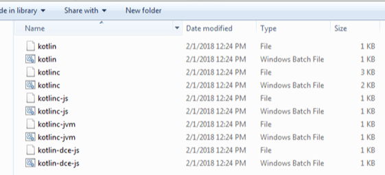
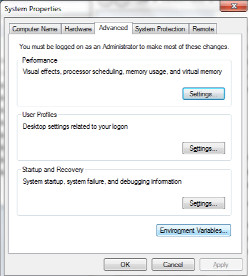
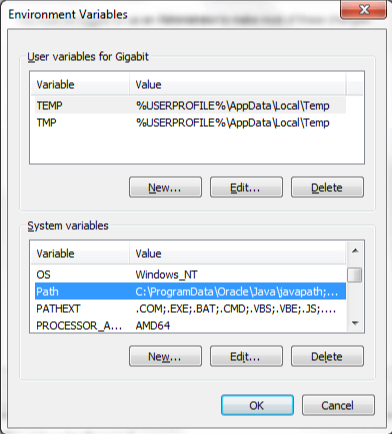
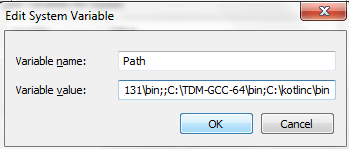
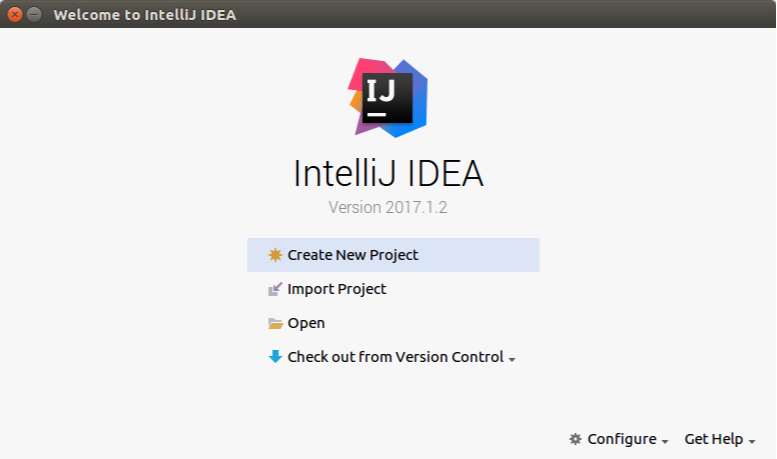
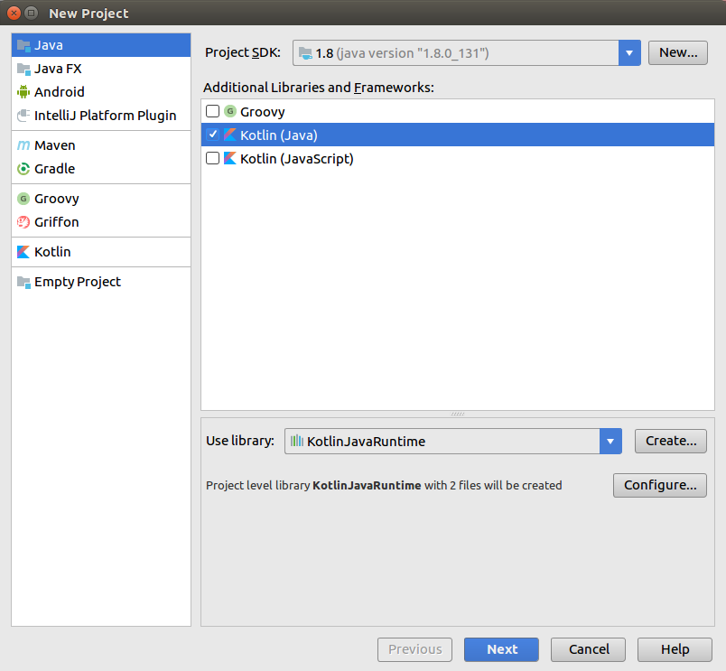
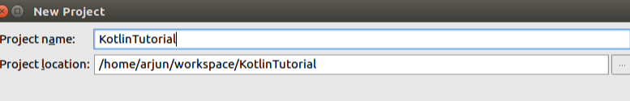
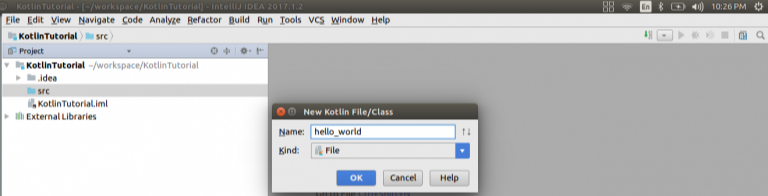

Since Kotlin runs on JVM, it is necessary to install JDK and setup the JDK and JRE path in local system environment variable.
To setup Kotlin for command line, you have to pre install JDK 1.6+ or above. To install JDK and set path of JDK and JRE refer link Set Path in Java (Learn Java Application) .
Setup Kotlin for Command Line
To setup Kotlin for command line, we need to go through following steps:
2.Extract downloaded zip in any of system location (in my case it is in C drive).
3. Copy the path up to bin directory of kotlinc.

4. Open Computer properties and click Environment variables.

5. Click on edit path

6. Past the path of kotlinc bin directory in variable value.

Setup of Kotlin Java Project in IntelliJ IDEA
First of all, you need to have IntelliJ IDEA setup in your computer. If you don’t have the setup, latest Community Edition is available at https://www.jetbrains.com/idea/. Download the IDE and follow the instructions for installation.
Start IntelliJ IDEA and Create New Project
.
Once you are ready with the IntelliJ IDEA Community Edition, start IntelliJ IDEA. A welcome window should appear with an option to Create New Project.

Select Kotlin Java
Click on the “Create New Project” button. It takes to a New Project window. By default, on the left pane, you may find Java, Java FX, Android etc. Select Java. In the “Additional Libraries and Frameworks” section, check “Kotlin(Java)”. Leave other options to their defaults. Click on Next.

Project Name and Location
Give your project a name, “KotlinTutorial” and choose a location for the project to be created in, as per you choice.

Click on Finish.
New Kotlin File/Class in the newly created project
If Project window is not visible, hit Alt+1. Expand the project. “src” project should be there in the Project. Now, right click on “src” folder -> New -> Kotlin File/Class.

Main method in Kotlin File/Class
Write the main method and hit Run-> Run. The Kotlin compiles and runs the project. The message “Hello, world!” is printed to the output as shown in the below screenshot.